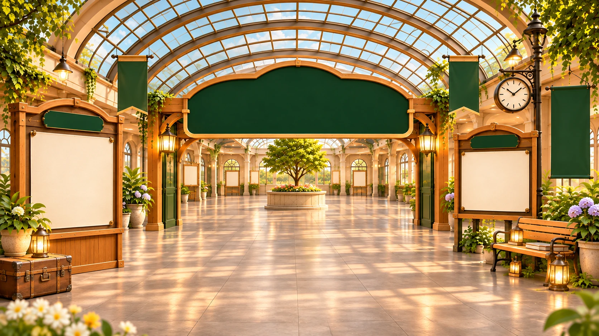

THE IDEA STATION GALLERY
온라인 작품 전시관
참가자들의 창작이 모여 완성되는 또 하나의 전시회
참가자들의 창작이 모여 완성되는 또 하나의 전시회.
첫 번째 작품을 기다리고 있어요ROOM 01 · 햇살의 방
전시 1관
작은 상상이 모이는 공간
공개 중인 작품0 작품
작품을 한 번 누르면 이미지와 이야기가 열립니다.

참가자들의 창작이 모여 완성되는 또 하나의 전시회
참가자들의 창작이 모여 완성되는 또 하나의 전시회.
첫 번째 작품을 기다리고 있어요작은 상상이 모이는 공간
작품을 한 번 누르면 이미지와 이야기가 열립니다.